Если коротко
В бесплатном канале
Ты получаешь только часть картины.

ЭКОСИСТЕМА СЫРОДЕЛИЯ
Ты вроде всё делаешь по техкарте.
А результат всё равно разный.
Сыр то получается, то нет.
Вкус меняется.
Текстура не та, которую ты хотел.
И в какой-то момент упираешься в одно:
я не понимаю, где у меня ошибка
Именно для этого и нужен «Сырный комбайн».
Если коротко
В бесплатном канале
Ты получаешь только часть картины.
Внутри комбайна
Разбираешь уже свой случай.
Уточняешь детали. Доходишь до понятного решения.
Давай честно
«Сырный комбайн» — не просто платный канал.
Не «ещё одно обучение».
И точно не курс, где тебе наваливают кучу рецептов и оставляют дальше разбираться самому.
Обычно в этот момент
Задача здесь другая
Обычно сюда приходят уже с опытом
Сюда редко приходят с нуля.
Обычно человек уже варит.
Уже пробовал.
Уже что-то получается.
А В ГОЛОВЕ ОБЫЧНО ТАК:
И по сути всё сводится к одному
я уже варю, но до конца не понимаю, что происходит
Бесплатный канал
Я там:
Внутри «Сырного комбайна»
Здесь можно:
👉 А у тебя почти всегда вопрос не общий, а свой.
В бесплатном канале ты получаешь логику и направление.
Но когда ситуация уже твоя, дальше всё упирается в детали.
И тут одного общего ответа почти всегда мало.
Я не просто отвечаю.
Я показываю, на чём этот ответ держится, чтобы ты начал понимать процессы и взаимосвязи.
То есть не просто что делать, а почему именно так.
Без пауз.
Без «потом».
Без догадок.
Чаще всего
Внутри
Из практики. На реальном опыте.
Что ты получаешь
И самое важное
Очень часто именно в ответе на чужой вопрос у тебя щёлкает, и ты вспоминаешь свою ситуацию.
А ещё всё это потом собирается в базу с навигацией, куда ты можешь вернуться в нужный момент.
В основном канале ты получаешь посты, короткие ответы и общую логику.
Внутри «Сырного комбайна»
Не просто ответ, а понимание, на чём он держится.
Если максимально просто
Бесплатно — это только малая часть.
Внутри — не просто ответ, а понимание, на чём он держится и как это применить к твоей ситуации.
Параллельно изучаешь теорию, чужие разборы и полезные материалы. Со временем у тебя появляется насмотренность и понимание.
Самое главное:
Ты перестаёшь действовать вслепую.
Если ты уже варишь сыр — тебе сюда.
Особенно если результат нестабильный и хочется не просто повторять действия, а управлять процессом.
Если:

Это не:
Здесь не копят контент ради контента. Здесь начинают понимать процессы, взаимосвязи и то, как управлять результатом.
1490 ₽ / месяц
Можно зайти на месяц, посмотреть формат и задать свой первый вопрос.
14 900 ₽ / год
Если хочешь работать вдолгую, спокойно возвращаться к базе и разбирать свои вопросы по ходу.
Что откроется сразу после входа
Платформа с обучающими материалами, которая постепенно пополняется
Закрытый чат и среда участников
Возможность задать вопрос и разобрать свою ситуацию
Если формат тебе подходит, заходи в «Сырный комбайн». Внутри уже есть с чего начать.
* Если пока достаточно просто смотреть, оставайся в основном канале.